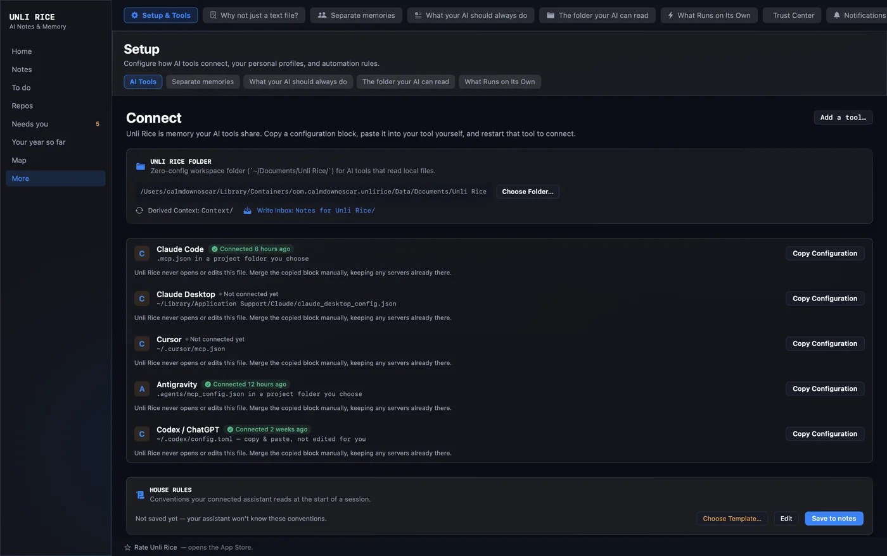

1. What Unli Rice is
Unli Rice is a local note log that your AI tools share. Claude, Codex, Cursor, Antigravity — every agent you connect reads and writes into the same log, so you stop re-explaining the same context to each one in turn.
They connect over MCP, the Model Context Protocol: a standard way for an AI tool to reach something outside itself. In practice it means you paste one block of settings into each tool once, and that tool can then read and write your notes. You will see MCP used as shorthand throughout the rest of this guide and inside the app.
The log is append-only: writes add, they do not overwrite, and every write is stamped with the name the tool gave for itself. Removing anything is something only you can do, by hand, and it is covered below. It runs on your Mac, and the notes stay there unless you move them.
2. Set it up
Open Unli Rice for the first time and it asks you one question: which tool do you use? Claude, ChatGPT, Cursor, or something else. Answer it and you get what that tool actually needs — for most, a settings block already filled in; for ChatGPT in a browser, a folder instead, because a web page cannot read files on your Mac. You do not have to go looking for a settings screen, and you can reach the same thing later if you add another tool: More → Setup & Tools → AI Tools, which is the Connect screen referred to throughout this guide. It lists every tool with its config file, a Copy Configuration button, and when that tool last checked in.
Then the app waits, and tells you when your tool has actually connected. You do not have to guess whether it worked.

~/Documents.Where the block goes
You paste it in yourself, into a file belonging to that tool. Unli Rice shows you the exact file for the tool you picked, because it is different for every one of them:
- Claude Code —
.mcp.json, in a project folder you choose - Claude Desktop —
~/Library/Application Support/Claude/claude_desktop_config.json - Cursor —
~/.cursor/mcp.json - Antigravity —
.agents/mcp_config.json, in a project folder you choose - Codex CLI —
~/.codex/config.toml - ChatGPT in a browser — no file at all. It cannot reach your Mac; use the folder route below.
A leading ~ means your home folder. In Finder, press Cmd + Shift + G and paste the path to go straight there.
There is no single MCP config format, and this trips people up. Four of those files are JSON. Codex CLI is TOML instead — ~/.codex/config.toml, where the block is a [mcp_servers.unlirice] table added at the end of the file, on its own. The app gives you the right shape for the tool you picked, so copy the block it shows you rather than one you saw somewhere else. If you add a tool that is not on the list, Unli Rice picks the format from the file extension you point it at.
Pasting into a JSON file that already has something in it
Read this part before you paste, because it is the one step where a small mistake produces a file that looks fine and never connects. What the app copies for a JSON tool is a complete file, not a fragment. It already has the mcpServers wrapper around it:
{
"mcpServers": {
"unlirice": {
"command": "/Applications/Unli Rice.app/Contents/MacOS/unlirice-mcp",
"args": []
}
}
}
So there are two cases, and which one you are in depends on what is already in the file you opened:
- The file is empty, or does not exist yet. Paste the block exactly as copied, save, and you are done.
- The file already has an
mcpServersobject with other servers in it. Do not paste the whole block. Paste only the inner"unlirice": { … }part, inside themcpServersobject that is already there, with a comma after the entry above it.
The second case ends up looking like this — one mcpServers, with your servers side by side inside it:
{
"mcpServers": {
"something-you-already-had": {
"command": "..."
},
"unlirice": {
"command": "/Applications/Unli Rice.app/Contents/MacOS/unlirice-mcp",
"args": []
}
}
}
The mistake to avoid: pasting the copied block inside an mcpServers object that already exists. That leaves you with one mcpServers nested inside another, which is not a shape any tool understands — and most fail quietly rather than say so. If the word mcpServers appears twice in the file, that is the bug.
Unli Rice never opens or edits that file. It hands you a block and you paste it. Whatever is already in there stays exactly as it is, and nothing on your machine is changed on your behalf.
Or point a tool at the folder instead
Some tools read local files rather than speaking MCP, and ChatGPT in a browser cannot reach your Mac at all. For those, Unli Rice keeps a plain-Markdown folder that you point a tool at, upload, or copy from. If pasting config blocks is not something you want to do, start here.
Do not go looking for that folder in your own Documents. The App Store build is sandboxed, so its idea of “Documents” is a private folder inside the app, with a path like ~/Library/Containers/com.calmdownoscar.unlirice/Data/Documents/Unli Rice. The screen shows you the real path in full — copy it from there rather than typing one from memory. If you would rather have the folder somewhere you can actually find, use Choose Folder… on that screen and put it in your real Documents or iCloud Drive. That is also what you do if you want your iPhone to sync into it.
Inside it there are two things worth knowing apart, because they run in opposite directions:
- What Unli Rice writes out —
Context/,AGENTS.md,CLAUDE.md, and a file per note. These are copies, regenerated on a schedule. Editing one edits the copy: your real note is unchanged and your edit disappears the next time the folder is rebuilt. Deleting the whole folder costs you nothing, for the same reason. Notes for Unli Rice/— the drop box, and this one does come back the other way. Any Markdown file you put in there gets ingested into your real log by the background worker, and becomes an actual note. So a tool that cannot speak MCP can still give you something: have it write a.mdfile into that folder.
So the folder is a hand-off, not a shared workspace. Reading is a copy and writing only happens through the drop box — an assistant cannot edit an existing note this way, only add a new one. Live two-way access to your notes, where a tool reads a note and appends to that same note, is what an MCP connection gives you and this route does not. It is worth knowing which of the two you are on.
The one thing that catches everyone: a tool reads its configuration when it starts up. One that was already running will not see Unli Rice until you quit it completely and open it again. If the status on the Connect screen does not change, restart the tool first. If it still does not connect, check that the block landed in the right file and in the right shape — one mcpServers object with unlirice inside it for a JSON file, or its own [mcp_servers.unlirice] table in config.toml.
3. Tell your agents who you are
An agent that knows nothing about you gives you generic answers and re-asks the same questions. This is where you fix that once instead of at the start of every session. Two separate features, with confusingly similar names.
House Rules — how agents should behave
In the app this is More → What your AI should always do. The guide uses “House Rules” because that is what the feature is called in the notes it writes and in the rest of this page.
Your standing instructions for how agents should behave, saved as a note in your log. It is worth being exact about what that buys you: House Rules is a note an assistant can find and read, not text injected into every session. What Unli Rice tells a tool on connection is that a vault exists and is worth searching; the House Rules note is then one of the things it finds. An assistant that reads your notes at the start of a session — which is precisely what the built-in rules ask for — picks it up. One that never searches will not, and the fix for that is a line in that tool's own setup telling it to. Three presets are built in: Standard Memory, balanced conventions for a shared multi-agent memory; Codebase Memory, aimed at architecture decisions, migrations, verification and handoffs; and Minimalist. Edit one, or import your own.
Choosing a preset never writes to your notes by itself. It is a draft until you apply it. The editor shows the character count and an approximate token count, labelled as an estimate because tokenizers differ between models — these are words every agent pays for in every session, so it is worth seeing the size.
The Profile Builder — who you are and what you are working on
A wizard that turns your situation into the context agents are handed: your name and role, your mission, the persona and tone you want them to use, formatting preferences, the principles you work by, your stack defaults, your dos and don’ts, and a list of your projects with a one-line description and a status each. You can add per-platform overlays too — the built-in ones cover Apple and Web — so rules that only apply to one kind of work stay attached to that work.
Four templates to start from: Studio Standard (the author’s own setup, generalised, and the recommended starting point), Solo Developer, Writer / Researcher, and Minimalist. Take all of a template or the parts that fit.
No real names, projects or history are baked into the templates. They carry placeholders you replace — a name field reading “Founder”, a project called “Flagship App” described as “replace with your own”. The Studio Standard template is the shape of the author’s setup, not its contents. Nothing in Unli Rice knows who you are until you tell it, and what you tell it stays on your Mac. (The app does carry the author’s name in its copyright line and links to a public GitHub account for support and the privacy policy, the way any app does.)
Guardrails are the part worth the time
Inside the builder, guardrails are hard rules rather than preferences — the things you want refused rather than weighed. The built-in examples give the flavour: never add engagement-maximizing patterns; no ads and no trackers; stay inside the active project’s folder; if a fix has not worked after two attempts, stop and write up what was tried instead of looping on variations.
Write yours the same way. A guardrail phrased as a preference gets traded away against something else the moment an agent finds a reason.
Your first two notes
A brand-new, empty log is seeded once with two short notes tagged guide. They exist because an empty list teaches you nothing about what a note here is for, and because the janitor only proposes a tag once that tag is already in use on a few notes — so on a genuinely empty log it would have nothing to work with and would look broken. They are ordinary notes. Archive them once you have read them; they are seeded once and will not come back.
4. How to think about a note
A note has a title, a body, tags, and links. Link one note to another by writing its title in double brackets — [[Wiki: index]] — and Unli Rice keeps the connection in both directions. A link to a note that does not exist yet is fine; it marks something worth writing.
Every write also carries a source: the name of whoever made it. claude, codex, antigravity, you. This is what makes a shared log readable later, because it separates a conclusion an agent reasoned its way to from a line a machine put there. Two sources belong to the app itself and no agent should borrow them: janitor and ingest.
Be clear-eyed about what a source is, though. The calling tool supplies that name itself and Unli Rice records what it was handed. It is an honest label from an honest tool, not an identity check — anything you connect could put any word there, including one of those two. That is fine for the job it does, which is letting you read the log back later and see who was working. It is not a security boundary, and nothing important rests on it: what an agent can do is fixed by the tools it is given, not by the name it signs.
5. What can and cannot delete
This is the part that surprises people, so it is better stated here than discovered later. The short version: no agent can delete anything. You can.
What agents can do
- Appending never replaces. Adding to a note puts text at the end. Earlier content, including another agent’s, stays where it was.
- Archiving is as close to deleting as an agent gets, and it is reversible. It hides a note from the default listings and nothing more.
- Every note carries its own history. Open the event timeline for any note and you get each change, who made it, and when.
- Structural changes are proposed, not applied. An agent that suspects a duplicate or a contradiction raises a flag for you. Raising a flag changes nothing by itself.
This is not a matter of agents being asked nicely. Deleting is not in the set of things they are able to express: the tools they are given are built from the safe layer, and the code that can remove history lives outside it.
What you can do
You can purge a note, from the app, by hand. It is deliberately yours alone — it never runs on a schedule and no agent and no background job can reach it.
Even then it is gentler than it sounds. Every event belonging to that note is written out in full first, and the whole log is copied to a backup before anything is rewritten, so a purge can be restored and the result is identical to what you had. What a purge genuinely destroys is the log’s continuity — those lines are no longer in the live file — rather than the content itself.
The point of all of it is that you can trust what the log says happened. A record that anything in the system could quietly rewrite is a record you would have to verify some other way.
6. The three layers
Notes are not all the same kind of thing, and knowing which one you are holding is most of reading the log well.
- Raw files. Verbatim copies of whatever was brought in — documents, session transcripts — kept in a folder beside the log. You do not read these day to day: the index entries below point at them, and a recovery snapshot preserves them along with the log.
- Index entries. The
Session:andDoc:notes, one per raw file, written automatically. These are machine-built descriptions, not conclusions. They tell you whether a file is the one you want. If it matters, open the file. - Wiki hubs. Notes titled
Wiki: <topic>, written by a reasoning agent. Each says what exists for a topic and where the real authority is. This is the only layer with judgement in it, which is also the reason it is the layer that goes stale.
Once you have one, start at the note titled Wiki: index. It exists so you do not have to read a corpus of hundreds to find the four notes that matter. It is not there on your first day. A new log is seeded with two notes and neither is a wiki hub; hubs get written when there is something worth hubbing, by an agent you ask to write one. Once you have a few dozen notes, asking for it is a reasonable thing to do.
7. The panes
The sidebar has eight rows, and most of the settings live behind the last one. Names below are the ones on the buttons.
In the sidebar
Home. What your AI currently knows about you — your profile context as one readable page, with the note count.
Notes. Search, read, tag, and open any note’s history. Search is keyword matching over titles, bodies and tags.
Repos and the branch graph. A view of the git repositories you have pointed Unli Rice at: which branches exist, and which branch tips are not on any remote this clone has fetched. That is worth reading precisely, because it is a narrower claim than it sounds: it compares the tip of each branch against the remote refs already fetched here. It does not walk individual commits, and it cannot speak for a remote it has never fetched from. Read it as “nothing I know about has this”, which is still the useful warning.
To-Do. Two kinds of item live here and they behave differently, which is the thing to learn about this pane. Derived items are computed from the state that makes them true, and they have no checkbox because there is nothing to check — the item goes away when the state does. A stored checklist drifts from reality the moment someone does the work without ticking the box; deriving is how this half stays honest. It reads each project’s memory.md for a declared next step, and falls back to the last published repository snapshot when it cannot get a live read, which is why an item can be labelled “as of the last snapshot”. AI-flagged items are the other kind: an agent that spots something worth doing writes an ordinary note and tags it todo. Those are stored, like any note, and they carry a Done button that archives the note behind them.
Needs you. The flags waiting on a decision, with a count on the row. This is where an agent’s proposed merge or suspected duplicate ends up.
Your year so far. A retrospective read back to you from notes you already have.
Map. The link graph — notes as nodes, double-bracket links as edges.
Under More
Setup & Tools. The Connect screen, plus everything below it in this list.
Why not just a text file? The argument for the whole thing, if you want it.
What your AI should always do. House Rules — see telling your agents who you are.
Separate memories. Profiles: separate note logs, each in its own folder, with one marked as the master. A way to keep unrelated bodies of work apart — not a way to change how agents behave.
The folder your AI can read. The plain-Markdown folder and its drop box, covered in pointing a tool at the folder.
What Runs on Its Own. Background work: bringing in documents and sessions from folders you have nominated, ingesting the drop box, and the janitor.
Archived Notes. Everything hidden from the default listings, and where you bring one back.
Notifications. Problems the app found on its own, such as a chosen folder it can no longer reach.
Trust Center. Read-only checks: whether the log and its folder are writable, which MCP clients have checked in, whether a recovery point exists, and what the background worker is doing. Client check-ins record the client’s name and version, timestamps, the tool name, and whether it succeeded — never tool arguments, and never note content.
The Profile Builder sits inside Setup & Tools rather than on its own row. Same place you connect a tool.
8. The iPhone app
Unli Rice Capture is a satellite, not a second copy of the app. It records audio and transcribes it, and it takes typed notes.
It handles notes you already have, too: you can add to an existing note instead of starting a new one, and archive a capture or bring it back, all from the phone.
It also mirrors your repositories and your to-do list. Derived items are read-only on the phone — you cannot tick one off, because they are computed on the Mac from the state of your repositories. What you can do is tap one and write a note against it: what you type is appended to that project’s note, stamped with the project, the item, and the time. AI-flagged items behave the same as they do on the Mac: they are notes, so they have a Done button that archives them.
The Mac holds the log, and the phone syncs its own per-device shard into it, which is what lets both write without either one clobbering the other — but only once you have given it somewhere shared to sync to. The first time you capture something the phone asks where captures should go, and “Keep on this device only” is a real answer to that question. Choose it and nothing reaches your Mac until you change it in Settings. To sync, pick a folder in iCloud Drive on the phone and point the Mac at the same one.
9. Your data
The log is one append-only file with your raw sources beside it. You can point Unli Rice at a different folder for it, and the app tells you which one it currently has open.
Recovery points
A snapshot copies the event log byte for byte, together with your raw files and the small settings belonging to that log, and checksums all of it with SHA-256 so it can be verified later. Restoring never replaces your current log. It appends only the events that are missing and copies only the files that are absent, which keeps the append-only rule intact and means a restore cannot cost you anything you already had. The trade is that your settings do not come back either: House Rules, routine state and notices are copied into the snapshot, but a restore leaves them sitting there rather than writing over the ones you have now. If you want an old one back, take it out of the snapshot folder yourself.
What the janitor may do
The background janitor can add a tag or raise a flag. That is the whole list. It cannot archive, retitle, merge, or resolve anything. A tag it added is a suggestion — remove it if it is wrong, and it will not put it back. A flag it raised is a proposal waiting for you.
10. When something looks wrong
A tool I connected does not appear. Restart that tool completely so it reloads its configuration, then confirm the block landed in the right file and in the right shape — one mcpServers object with unlirice inside it, never two nested ones. See pasting into a JSON file above. Configuration is read once, when the session starts.
Notes I expected are missing. Confirm which log the app has open. It reports this, and it is the first thing to check rather than the last. A banner about a corpus that is unreachable or stranded means what it says, and it is specific: it names the path, and for a stranded log it tells you how many notes are in it that the log you are on does not have. A stranded log is intact and waiting. An unreachable one is a different matter: the app can tell you it cannot open that folder, but not why — an unmounted drive, a folder you renamed, and a folder that was deleted all look the same from here. Check the path it names before assuming which one you are in.
The to-do list looks out of date. It is derived, so it is only as fresh as what it derived from. Publish a new repository snapshot — that is its own step, and pushing alone does not do it. For a declared next step, give the project a memory.md containing the exact marker **Next step:** with the step after it. The asterisks and the capital N are both load-bearing: next step: or Next Step: will not be found. The project folder also has to sit directly inside a folder you have granted for scanning — one level down, not nested deeper.
Nothing is being brought in automatically. Check that background routines are switched on, and that the folders you want scanned have been granted. A folder has to be chosen through the file picker before the app may read it.
11. Tool reference
What a connected agent can do over MCP. Every write takes a source — the name the calling tool gives for itself — so the log reads back attributably.
Verified against unli-rice@1f49c0f on 2026-09-05.
| Tool | What it does |
|---|---|
search_notes | Keyword search over titles, bodies and tags. Substring matching, not semantic. |
list_notes | Lists notes, most recently updated first. |
get_note | Fetches a single note by id. |
create_note | Creates a note. Always a new one — it never overwrites an existing note. |
append_to_note | Adds content to the end of a note. Never replaces or removes what is already there. |
tag_note | Adds a tag. |
untag_note | Removes a tag. This is how you correct a tag the janitor got wrong. |
archive_note | Hides a note from default listings, with a reason. Reversible, and the closest to deleting that any agent can get. |
unarchive_note | Brings an archived note back. |
flag_for_review | Queues a concern for you — a suspected duplicate, a conflict, a proposed merge. Never applies the change itself. |
pending_reviews | Lists every unresolved flag across all notes, oldest first. |
resolve_review | Marks a flag resolved. Meant for after you have decided — but that is a convention, not a lock. Any connected agent can call it. |
note_history | The immutable event history for one note, oldest first, with attribution and timestamps. |
transaction_log | Raw recent events across the whole log, most recent first — the audit trail. |